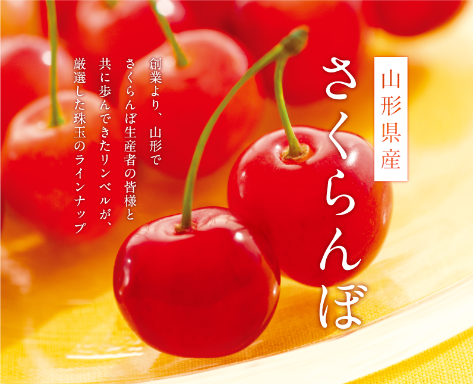
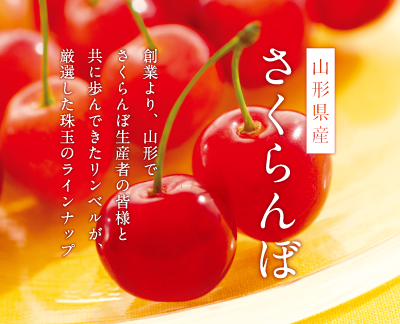
選び方のポイント
お届けの時期
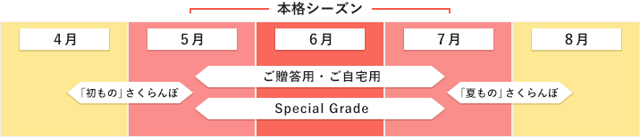
パッケージと詰め
アートディレクター中山ダイスケ氏が手掛けた斬新なデザインのパッケージから、
質感の高い桐箱詰まで、幅広くご用意。ひとつひとつていねいに詰めています。
-
桐箱詰め
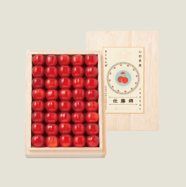
- 化粧詰を、高級感あふれるリンベルオリジナルの桐箱に
-
化粧詰め
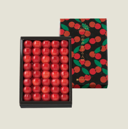
- 美しさにこだわり、色のバランスまで整えた詰め方
-
ダイヤパック
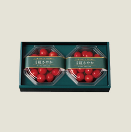
- 透明なパックに「軸」が透けないよう、放射状に
-
置並べ
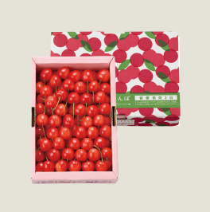
- 箱を開けた時に「軸」がなるべく見えない詰め方
-
バラ詰
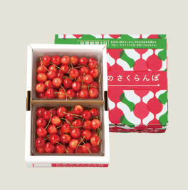
- 隙間を少なく、配送中に傷つかないよう工夫しています
サイズ・等級
等級、サイズも一定の基準を満たしたものだけを厳選しています。「等級」とは、着色面積の基準のこと。高ければ高いほど、より見た目が鮮やかに。
- 等級とは – 佐藤錦の場合
- （秀）［マルしゅう］（50％以上）、
秀（60％以上）、特秀（70％以上）
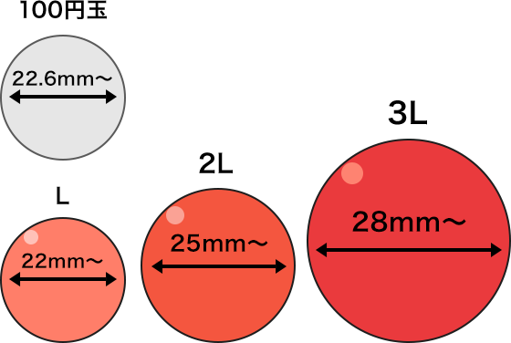
品種
-
- 佐藤錦
- さくらんぼの代名詞ともいえる人気の品種。果肉は乳白色で甘みと酸味のバランスが優れています。
-
- ダイアナブライト
- 味・形ともに国産種の中では最大の大きさ。綺麗なサフランピンクの色づきでさくらんぼの女王とも称される。
-
- 紅秀峰
- 果肉はクリーム色で食べごたえのあるしっかりとした食感。酸味が少なく甘みが強い濃厚な味わいです。
-
- 紅姫
- ８月に入ってからでも食べられるように、摘みたてをそのまま専用の施設にて低温貯蔵された、さくらんぼ。
-
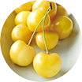
- 月山錦
- 果皮が黄色く、甘みの強い大粒のさくらんぼ。国内では希少価値が高く、特に女性に人気。
-
- 大将錦
- さくらんぼの王様の意味 『大将錦』、粒が大きく糖度と酸味のバランスが絶妙で味は濃厚。
-
- 紅てまり
- 果肉は緻密でしっかりとしていて果汁が豊富。酸味がありバランスの良い味わいです。
-
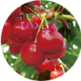
- 紅さやか
- 果皮は朱色〜紫黒色。果肉は鮮やかな淡赤色。早稲種としては大玉の、適度な甘みと酸味のさくらんぼ。
-
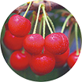
- 山形美人
- 佐藤錦よりも果皮の赤味が強く、うっすらと白い線が入った、ツヤがある美しいさくらんぼです。果実は程よく引き締まっており、ほのかな酸味と濃厚な味わいが特徴。
リンベルのこだわり
「生産者の顔」が見えること
さくらんぼの栽培は、驚くほどの手間がかかるもの。だからこそ、そこには生産者たちの熱い思いが込められています。その想いを伝えることこそが、年間900万件のギフトを承る私たちリンベルが、一番こだわったことでした。


「さくらんぼ王国」山形の誇り
さくらんぼは、明治初期に欧米から導入され、風土に適合した山形県だけが実績をあげました。しかし、その頃の品種は実割れや実腐れが起こり、長期輸送も困難なもの。そこで、山形県東根市の佐藤栄助さんが、品種改良に挑み、16年もの苦労の末、日本を代表する人気品種「佐藤錦」が誕生します。
内陸部が盆地で、冬と夏、そして昼夜の寒暖差が大きく、さくらんぼ栽培の好適地だったこと。明治期から官民一体となって努力を重ねたこと。それらのことから、山鹿県は、現在では国内のさくらんぼ収穫量の7割を占める「さくらんぼ王国」となりました。
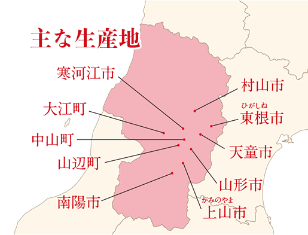
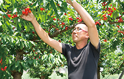
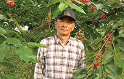
さくらんぼの栽培は、とても繊細で、手間がかかるものです。余分な芽を摘む、受粉を助ける、果実を間引きする、などは人の手が欠かせません。もちろん、収穫も手づみで行われます。3月から4月にかけては霜害を防ぐ温度管理、収穫時期が近づいてからは雨を防ぎ、日光が十分に行き渡るよう様々な手立てをほどこします。
「さくらんぼ王国」山形が、誇りを持って送り出すさくらんぼ、この機会にぜひご賞味ください。